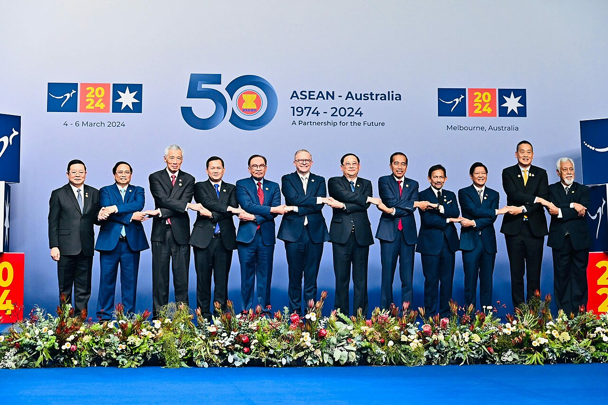
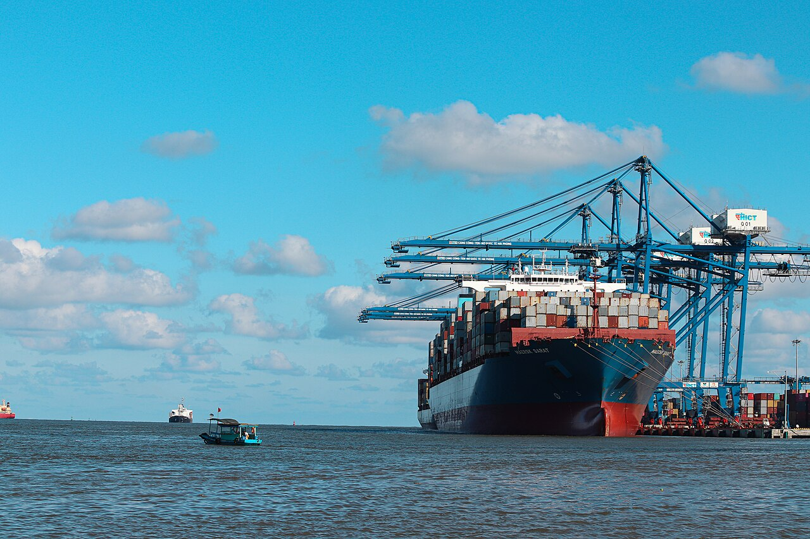

Vietnam & Australia · A data analysis
A win-win journey for Vietnam and Australia
Two economies that fit together almost by design: Australia sells what Vietnam's factories need, Vietnam sells what Australian households buy, and hundreds of thousands of students, workers and travellers move between them each year. Trade reached A$30.0 billion in 2025. Investment is the one pillar that has not kept pace.
ASEAN–Australia Special Summit, Melbourne, March 2024 · Government of Indonesia · Public domain
The finding
The fit is real. The capital hasn't followed it yet.
Trade and investment normally grow together. A company that sells into a market for long enough eventually builds in it — a factory, an office, a stake in a local firm. Between Australia and Vietnam the selling is thriving. The building has barely started.
2025 was Vietnam's strongest year for foreign capital in five: US$27.62 billion of realised FDI, against US$38.42 billion of total registered capital. Singapore, China, Hong Kong and Japan took more than two-thirds of all newly registered capital between them. Australia does not appear among the leading sources at all.
That is the gap this analysis is about — and the reason it is worth closing. Everything either economy would need from the other is already in place: complementary industries, three overlapping trade agreements, a partnership at the highest tier Australia offers, and a financing facility built for exactly this purpose.
Who is actually financing Vietnam's growth
Leading sources of newly registered FDI, 2025, US$ billion. Shares are of the US$17.32bn registered across 4,054 newly licensed projects.
Source: Ministry of Finance Foreign Investment Agency, via Viet Nam News and Vietnam Law Magazine. Australia's entire cumulative registered capital in Vietnam, built up since 1988, is US$1.9bn across 712 projects — smaller than what Singapore alone committed in 2025.
is everything Australia has registered in Vietnam since 1988, across 712 projects — against the US$4.84bn Singapore registered in 2025 alone.
The distinction matters, and it is why closing the gap is worth the effort. Trade moves goods across a border and stops. Investment builds things: it transfers technology, trains managers, and ties two economies together in a way that survives a bad year in commodity prices. Trade alone leaves the relationship exposed to exactly the commodity cycle that dominates what Australia sells. Investment is what would make it durable.
Part one · The landscape
Opposite ends of the cycle
The two economies enter this partnership from opposite cyclical positions. Vietnam is accelerating. Australia is tightening. That contrast shapes what each can realistically offer the other.
Vietnam is growing at 8% and cutting debt
Vietnam's economy expanded 8.0% in 2025 while government debt fell to 30.3% of GDP — an unusual pairing, and the core of the investment case. Nominal GDP reached US$494 billion across a population of 102.3 million.
Source: IMF World Economic Outlook via the DFAT Vietnam country economic fact sheet, 2025. Comparison year 2024.
Australia is in its third rate rise of the year
Part two · Trade
Australia sells the inputs. Vietnam sells the output.
The top six line items in each direction tell the whole story. Australia ships raw industrial and agricultural inputs. Vietnam ships back the manufactured goods those inputs help make.
What each country actually sells the other
Top six exports in each direction, 2025, A$ million, goods and services. Hover any bar for detail.
Source: DFAT Vietnam country economic fact sheet, 2025 (DFAT-adjusted ABS data). Only the six largest items in each direction are published, so these bars do not sum to the totals.
Coal alone is of everything Australia sells Vietnam. Add iron ore and aluminium and the three commodities reach , or of the total. Education is the second-largest single line at — and the only large export not exposed to the commodity cycle.
That concentration is the vulnerability. Six line items carry of what Australia sells Vietnam, against for what Vietnam sells Australia. A single shift in Vietnamese energy or steel demand moves a large share of the Australian total — and Vietnam has committed to net zero by 2050.
A narrow base on one side only
Share of each direction carried by just six line items, 2025.
Source: DFAT Vietnam country economic fact sheet, 2025.

Two ledgers, one relationship
Canberra and Hanoi do not report the same relationship. Australia records A$30.0 billion of goods and services; Vietnam records about US$14 billion of merchandise. Both are correct — and being able to explain the difference is worth more than quoting either figure alone.
Services in, services out. Education-related travel (A$2,658m) and recreational travel (A$2,993m) are nearly A$5.7bn that the Vietnamese merchandise account never sees.
The balance flips sign. On the Australian ledger, Australia runs a deficit. On the Vietnamese merchandise ledger, Vietnam runs one. Services are the difference.
Origin versus consignment. Australia records imports by country of origin; goods made in Vietnam but shipped through third-party hubs are attributed differently on each side, which is part of why the two merchandise totals never reconcile exactly.
Part three · Investment
The pillar that hasn't kept pace
Trade is strong but narrow. People flows are large and growing. Investment is where the partnership's declared ambition and its actual capital diverge most sharply.
Who Australia has already committed its critical minerals to
Formal critical-minerals arrangements concluded by Australia. Vietnam is party to none of them.
Sources: Australian Department of Industry, Science and Resources; ASPI critical minerals partnership mapping; European Commission. Vietnam's 2024 Law on Geology and Minerals came into force on 1 July 2025 — the sectoral fit is real, but the queue ahead of it is long.
Australia's absence is not, on its own, evidence of disinterest. Two mechanical factors depress the measured figure, and an honest reading has to account for both.
Third-country routing. Much Australian capital enters Vietnam through Singapore or Hong Kong holding structures. Both Vietnamese registration data and balance-of-payments statistics attribute it to the immediate counterparty, so it never appears on the Australia–Vietnam line. Some of Singapore's US$4.84bn is, in substance, someone else's money.
Registered is not realised. Registered capital is a commitment to invest, not money in the ground. Vietnam's US$38.42bn registered against US$27.62bn realised shows the gap; cumulative registration totals never net out projects that were licensed and then abandoned.
Part four · People and labour
The flows that are larger and steadier than the capital
Where investment is thin, people are not. Students, tourists, migrants and — since March 2024 — agricultural workers move between the two countries in numbers that dwarf the capital account.
Source: Department of Home Affairs and Department of Education via the DFAT fact sheet, year ended December 2025; diaspora figure from the DFAT Vietnam country brief.
A labour arrangement capped at 1,000
Advantages and disadvantages
Where Australia sits in Vietnam's trade
Vietnam sends just 1.2% of its exports to Australia — sixteenth place — but draws 1.6% of its imports from Australia, its ninth largest source. Australia matters more to Vietnam as a supplier than as a customer: the same upstream story as the trade pillar.
Vietnam's trading partners, and where Australia ranks
Share of Vietnam's merchandise trade, 2025. Top five partners shown, with Australia highlighted.
Source: DFAT Vietnam country economic fact sheet, 2025, citing various international sources. Vietnam is in turn Australia's 13th largest export destination and 13th largest import source.
Part five · What next
Everything is in place except the deals
Three free trade agreements, a Comprehensive Strategic Partnership at 96% delivery, a A$2 billion financing facility, an investment deal team and a labour arrangement are all in place. The binding constraint is conversion.
Measured against their own stated goals
The investment target is scored on Vietnam's own registration data — the measure used throughout this analysis — rather than on any bilateral balance-of-payments series. On that basis the target is not close: in Vietnam's strongest FDI year in five, Australia did not appear among the leading sources of newly registered capital at all.
Where the gap could close
How the relationship was built
The conclusion
Method
Where every number came from
Every figure here is either read directly from a cited public source or computed from those
figures by scripts/build_data.py, which runs consistency checks before the page
is built. No value is estimated or illustrative.
Reading the data critically
Benchmark years, not a continuous series. The investment chart has four observations. Connecting lines are for readability; the path between points was not observed.
Registration data is lumpy. A single large project can move a country's annual ranking, so one year's league table is a snapshot rather than a trend. Australia's absence matters because it is persistent, not because of any one year.
Top-six lists are not totals. DFAT publishes only the six largest items per direction — covering 71.4% of Australian exports but 53.3% of imports, so the two directions are not equally well described.
Two currencies, two concepts. Australian figures are A$, goods and services; Vietnamese figures are US$, merchandise only. This page never adds one to the other.
2026 items are contemporaneous reporting, not audited statistics, and are kept separate from the 2025 statistical base.
Flows, not stocks. This analysis measures investment as FDI flows and registered capital, which is how both governments discuss it. A separate ABS balance-of-payments series measures the bilateral investment stock — what is currently owned, net — and puts two-way investment at A$2.0bn in 2025. That series is in the project's dataset and tells a compatible story, but it answers a different question and is not the basis for anything argued here.
Images, flags and insignia
Photographs are official or Creative Commons licensed and attributed individually. This page deliberately does not display the Commonwealth Coat of Arms or the National Emblem of Viet Nam: both are protected state insignia whose use implies official endorsement, and this analysis criticises both governments' economic policy. National flags carry no such restriction.